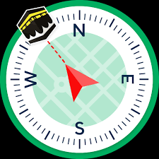

<ion-buttons slot="start" class="return">
  <ion-back-button defaultHref="tabs/autres" ></ion-back-button>
  <p>qibla</p>
</ion-buttons>
<ion-content class="ion-padding">
  <div id="map"></div>

  <!-- Centrez l'image verticalement et agrandissez-la -->
  <div
    style="display: flex; flex-direction: column; align-items: center; text-align: center; margin-top: 50%;"
  >
    
    <!-- Placez le texte en bas -->
    <p style="margin-top: 20px;">
      La direction de la Qibla par rapport à votre position : {{ qiblaDirection }} degrés.
    </p>
  </div>
</ion-content>
